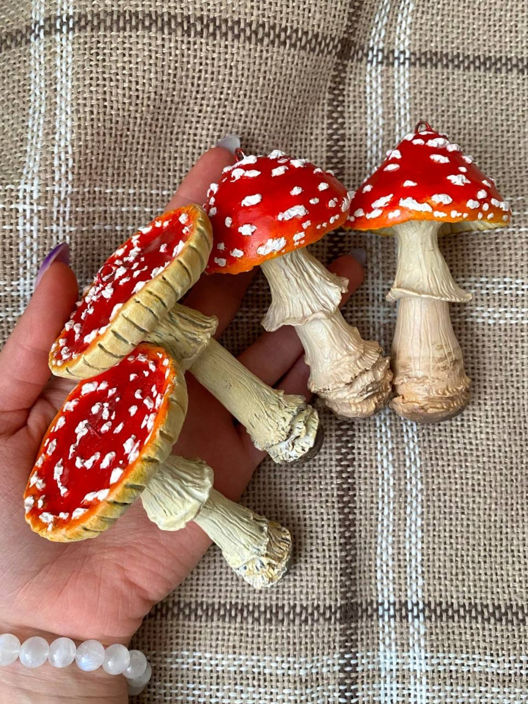

Хроника
Мухоморное безумие
Первая часть знакомства с грибным миром Мастерской.

«С такой скоростью я лепила и отправляла, что не успевала ни считать, ни фотографировать».
История началась с пяти мухоморов, сделанных для себя. Экспериментальная публикация на Авито неожиданно вызвала спрос, после которого работы стали создаваться практически только на заказ.
Открыть весь Мир